Automatic Schema Element Matching
Introduction
Creating match links manually is very time-consuming. Harmony provides a number of automatic matchers which use clues like the similarity of entity names, the words in the description fields, and the structure of the schema graphs to suggest candidate links between schema elements. Match links are given a confidence score based on the matcher's confidence that the link represents a genuine match. Information regarding a proposed match may be examined by right-clicking on the match link. Links are also color-coded by their confidence score.
Many real-world schemas are very large; a complete automatic matching between any given pair might take so long and use so much computer memory as to be impractical. Therefore, Harmony provides several ways of narrowing the schema matching problem.
Harmony has been successfully used with schemas containing thousands of elements. A case study is described in: Ken Smith, Peter Mork, Len Seligman, Arnon Rosenthal, Michael Morse, David M. Allen, and Maya Li, "The Role of Schema Matching in Large Enterprises", Conference on Innovative Database Research (CIDR '09), Jan 2009.
Element Matchers
Harmony currently incorporates four general-purpose schema matching algorithms. These are:
- Name Similarity: Compares names based on their similarity, using "edit distance" – a standard computational linguistic technique. As an example "control" and "cntrl" have an edit distance of 2 (two characters are deleted) so they would have a relatively high similarity score.
- Documentation Similarity: Compares the words found in the documentation as well as in the names without regard to order or syntax. For example, if in one schema you have an entity with the name "AC" and a description that says "Airport Code", and in the other schema an entity called "Code, Airport", then this matcher would link them.
- Documentation + Synonyms: Works like the Documentation Similarity matcher, except that it uses a thesaurus (WordNet) to match synonymous words. For example, it would link "Airport" and "Aerodrome".
- Exact Structure: Used to quickly identify elements in matched schemas which have the exact same hierarchical naming of elements all of the way to the root. This matcher is primarily used to identify elements in xsd schemas which come from shared base schemas.
There are also two special-purpose matchers that may be employed separately:
- WordNet Thesaurus: Works identically to the "Documentation + Synonyms" matcher, but uses the WordNet Thesaurus for gathering synonyms.
- Quick Documentation: Instead of matching all elements with one another, this matcher groups the schemas into subgroups which are matched first. Then only the elements in the matched subsections are matched together to identify linkages.
Narrowing the Match Space
There are several methods of choosing a subset of elements from each schema that will participate in a match process. If the schemas are large or if it is advantageous to divide the work, then the use of one or more of these techniques will help narrow the "match space" before executing the applicable matching algorithms.
-
Setting the Focus
This technique is especially useful for matching within a single schema subgraph at a time. Right mouse-click on the schema element and choose "Set Focus" to set the focus on that schema element and all of its descendants in the current schema graph. 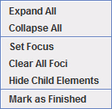
The resulting schema display, given a focus on node "1.1.1 Crop Production", would appear as follows: 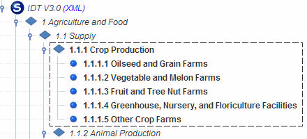
The focused elements are outlined in a dashed rectangle with the elements outside of the focus displayed in italicized text with a gray font.
More than a single focus may be set simultaneously in a schema. Given a focus on both node "1.1.1 Crop Production" and node "1.1.2.3 Poultry and Egg Production Farms" the resulting schema display would appear as follows: 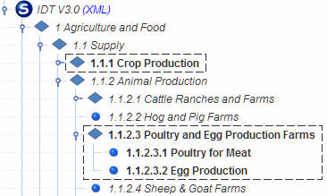
To clear an existing focus, right mouse-click on the schema element and choose "Clear Focus". In the following example the focus on node "1.1.1 Crop Production" (and just that node) might be cleared as follows: 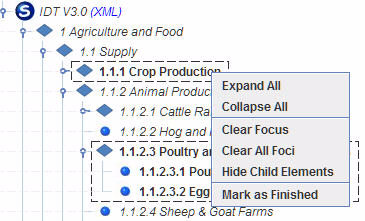
To clear all currently-set foci, right mouse-click on any node and choose "Clear All Foci".
-
Setting the Depth
This technique is especially useful if the schema graph is deep and the primary schema matching objective is matching schema elements at specific distances/depths from the root.
At the bottom of each schema pane is a bar with two sliders. The sliders control a pair of depth thresholds which, by default, are set to ensure that all graph nodes are visible.
Both the minimum and maximum depth may be set. Nodes immediately below the root are at depth 1, their children at depth 2, etc. Nodes that excluded are in gray italic text.
These two methods may be applied simultaneously. In the following example, two subgraphs are in focus on the left schema while the right schema is set to minimum and maximum depth = 1: 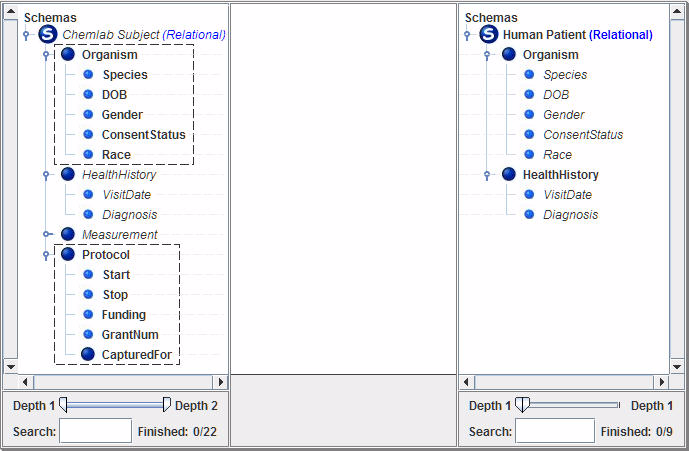
Note that schema elements falling outside of the focus or depth limits are grayed out and italicized. They will be ignored during automated schema element matching.
Running the Schema Element Matchers
The performance of the schema element matchers tends to degrade in proportion to the cross-product of the node count of the schema-pair. Unless the schemas are relatively small and the complete schemas must be matched "at once" it is always appropriate to set the focus and/or depth to restrict the size of the match space.
Matchers may be run individually or in combination. When run in combination, the scores from all of the schema element matchers are combined using a mathematical formula by a "Vote Merger".
- To run all matchers, use the Matchers menu to select Vote Merger and then Full Match; the match process will start immediately. 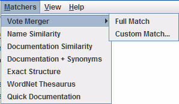
- To match only on selected element types in on schema, for example entities, attributes, or subtypes matchers, use the Matchers menu to select Vote Merger and then Custom Match.... The activated Run Schema Matchers dialog may then be used to select which types to run. By default all types will be selected for both schemas. 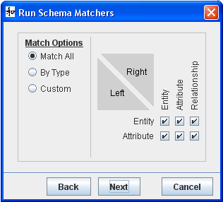
-
To run only selected matchers, use the Matchers menu to select Vote Merger and then Custom Match.... The activated Run Schema Matchers dialog may then be used to select which matchers (also known as "match voters") to run. By default the four standard matchers are selected, as illustrated in the following: 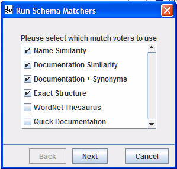
After adjusting the set of schema matchers to be used, selecting Next will initiate the match process.
- To run an individual matcher, select that matcher from the Matchers menu; the match process will start immediately. 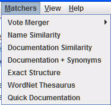
While the match process is executing the Run Schema Matchers dialog reports progress, as follows: 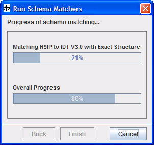
The upper progress bar reports which matcher is currently executing and its present state of completion. The lower progress bar reports the overall state of completion.
The results of completing the schema element match process will be displayed as a set of new match links. In the following example, only links having confidence scores ranging between 0.10 and 0.55 are displayed; the selected link (in blue) has a confidence score of 0.55. 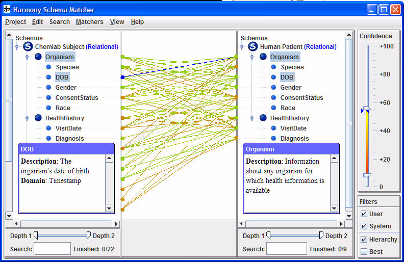
Inspecting Mappings describes how to review individual links.
Link Management describes how to manipulate links.